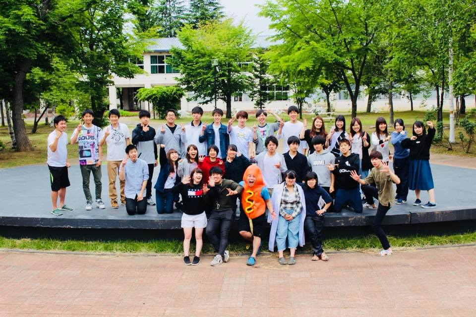

LFVとは？
Large Field of Visionの略で2016年2月24日に設立されたサークルです。
主に大学周辺に住む小学生を対象にイベントを企画、運営しています。そのほか他団体とコラボしてイベントを企画することもあります！
とにかく楽しい!!!をテーマに、子供から大人まで全ての人々が共に成長し、視野を大きく広げられるようなイベント開催を目指します！！
現在は4年生8人、3年生16人、2年生8人、1年生6人の計38人のメンバーがいます。（2020/10/08時点）
活動場所はイベント当日は青森大学内や青森市スポーツ公園わくわく広場などです。イベントの詳しい情報はイベント情報からチェックしてください！
